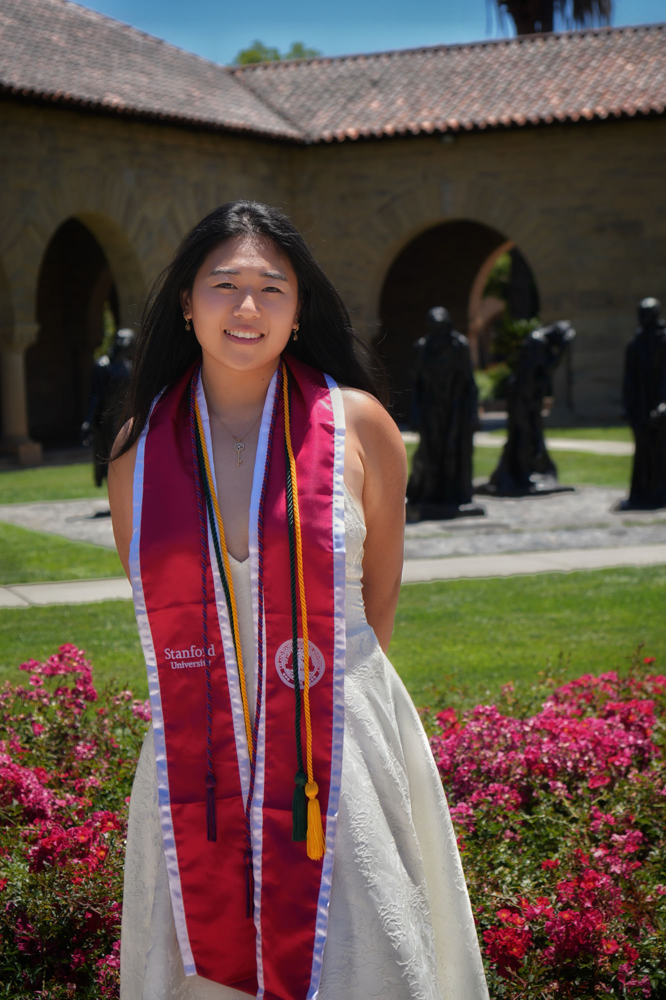
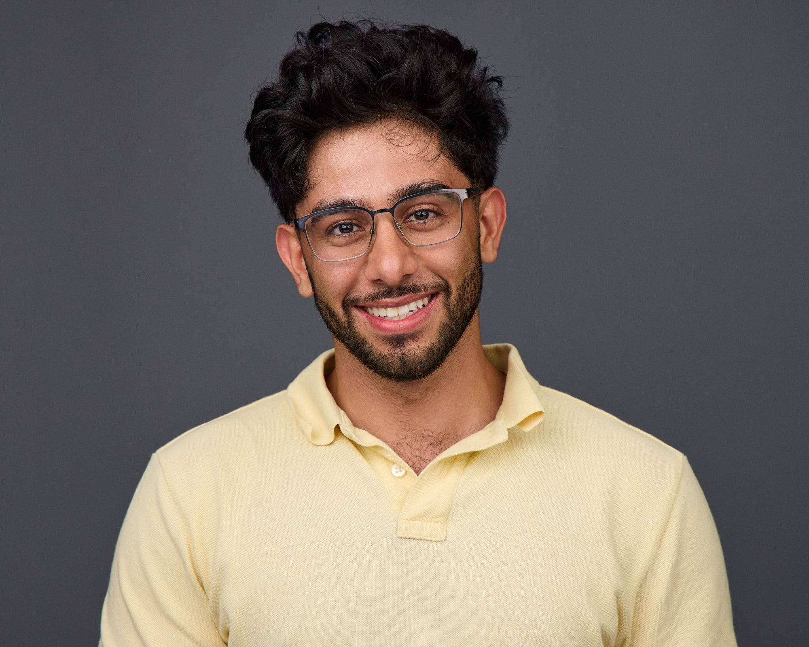
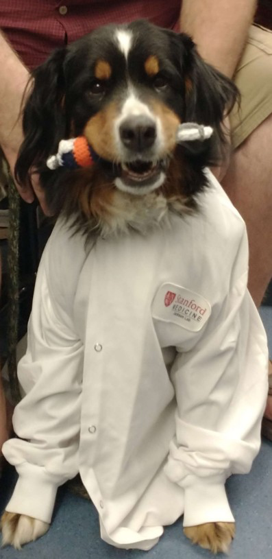

The lab
Our community
Every bubble is one of us. Click one to read about them.
-

Rachel E. Turn, PhD
Principal Investigator
Dr. Turn leads the lab in their mission to understand how cells establish a healthy, fate-specific G0 program. She is interested in the transient molecular mechanisms and dynamic changes in cell composition required to achieve these programs. To map these processes in time and space, she leverages state-of-the-art mass spectrometry, imaging, and functional assays in mammalian tissue culture, primary cells, and stem cell model systems.
- Education
- BA in Biology, Harriet L. Wilkes Honors College of FAU; PhD in Biochemistry, Cell, and Developmental Biology at Emory University (Kahn lab); Postdoctoral Fellow in the Baxter Labs, Stanford University (Jackson lab)
- Research interests
- Understanding the fundamental mechanisms driving signaling in time and space, and how these are disrupted in the context of pathology.
- Outside the lab
- Loves hiking, gardening, sculpting/pottery, writing poetry, camping, and baking. A mild “adrenaline junky” and former DnD enthusiast.
- Favorite animal
- Trash panda
- Fun fact
- I’m certified to rescue cetaceans (whales and dolphins, unfortunately not manatees…)
-

Mohammad Ovais Aziz-Zanjani
Research Assistant Professor
Dr. Aziz-Zanjani is a Research Assistant Professor in Comparative Biosciences working in Dr. Turn’s lab. He is a biological mass spectrometry expert with a PhD and postdoctoral training in cell biology — in particular, pancreatic islets — specializing in the regulation of critical cellular signaling pathways through post-translational modifications. With over a decade of experience in translational research, he applies a multidisciplinary approach to elucidate molecular mechanisms with direct clinical relevance. His expertise bridges advanced proteomics, cell biology, and metabolic disease, enabling productive collaborations across diverse disciplines and driving impactful discoveries in cellular biology and diabetes therapeutic approaches.
Co-first author on the STAMP quiescence study and the metabolic-STAMP beta-cell signaling work, and spearheads the islet cell dialogue program.
- Education
- BSc in Chemistry, Sharif University of Technology; MSc in Analytical Chemistry, K. N. Toosi University of Technology (Jabari & Mehdinia lab); PhD in Chemistry, Biological Mass Spectrometry, University of Virginia (Hunt lab); Postdoctoral Fellow in Cell Biology, the Baxter Labs, Stanford University (Jackson lab)
- Research interests
- Islet biology, biological mass spectrometry, post-translational modification, paracrine signaling, cell–cell communication, compartmentalization of cell signaling, and cellular mechanisms.
- Outside the lab
- Movies, traveling without planning, gym and yoga, gardens and museums. A former soccer player.
- Favorite animal
- Elephant
- Fun fact
- I’m rarely bored by life; I’m more often bored by routine conversation.
-

Artemis Xu
Undergraduate Researcher
- Education
- BS in Biology, Stanford University; MS in Computer Science, Stanford University
- Research interests
- Combining experimental cell biology and computational methods to decode the signaling logic of disease-relevant pathways and identify novel therapeutic targets.
- Outside the lab
- An avid tennis player, “gym bro”, and digital artist.
- Favorite animal
- Manta ray
- Fun fact
- Once touched a baby humpback whale as it swam by in the Fiji wilderness!
-

Amin Mobedi
Bioinformatics Research Assistant
- Education
- B.S. candidate in Electrical Engineering and Computer Sciences (EECS), University of California, Berkeley
- Research interests
- Uncovering meaningful patterns in noisy biological data, particularly in proteomics and cellular signaling.
- Outside the lab
- Enjoys weightlifting, martial arts, hiking, and taking way too many photos of the sky, especially sunsets.
- Favorite animal
- [PLACEHOLDER]
- Fun fact
- Started out doing research in knot theory before moving into computational biology.
-

Chloe
Lab Mascot
This background shows our community. Try to break these bonds!
Past lab members
Alumni of the lab and where they went next.
[PLACEHOLDER] No past members listed yet — send names, photos, roles, education, research interests, outside-the-lab notes, favorite animals, fun facts, and current positions as people move on.